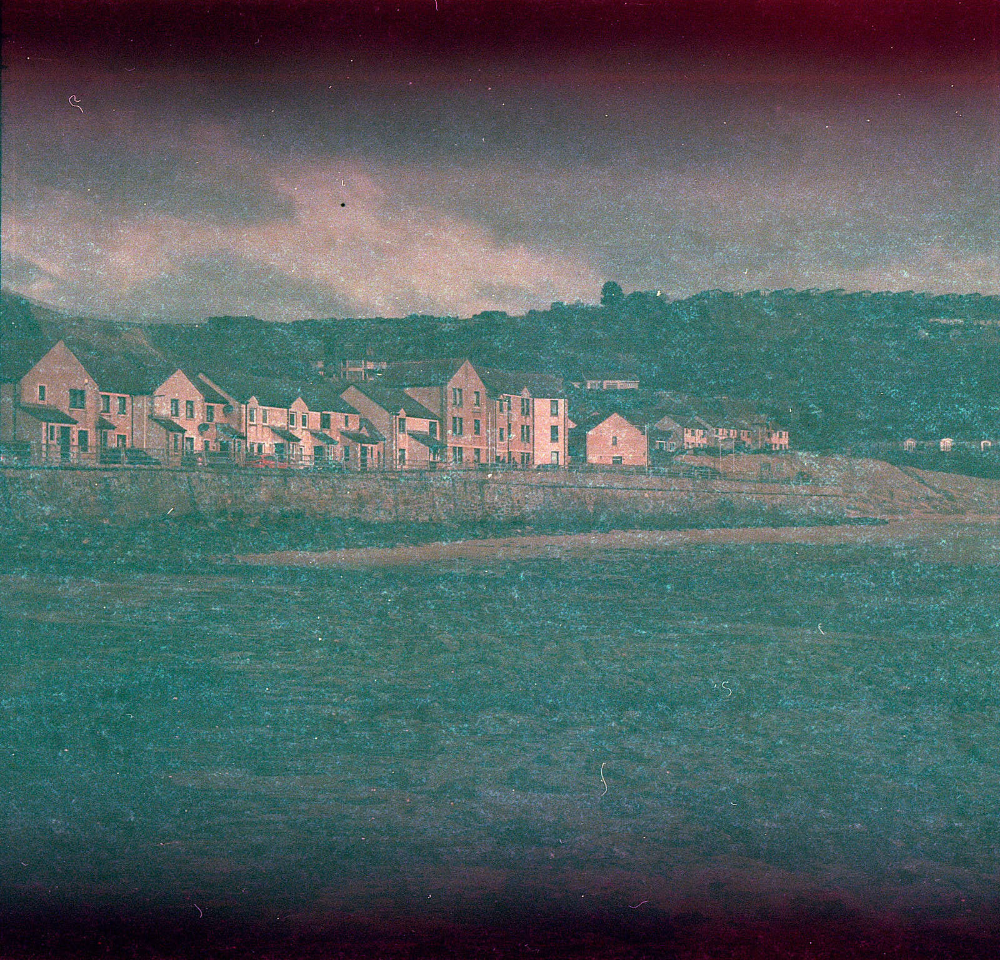

1983 Kodacolor II film
How I got on with an old film found in a cheap camera.

Kinghorn, 2020 f/22 at 1/200s
In a recent post, I mentioned that I had bought a new-to-me Agfa Isolette I camera. In it, I discovered as I opened the back, was an old roll of Kodacolor II. I closed the back and rolled it on to the next frame. A couple of days later, when my wife and I went to the beach for some relief from the emerging COVID-19 situation, I took the camera along.
Exposure heuristics
On the beach, having not really thought about it properly, I decided to finish the film off. The Isolette doesn’t have a meter, and I’d forgotten my Gossen, so I figured I’d give the “Sunny 16” rule a try. This goes something like: “if it’s sunny, and you’re shooting at f/16, then the shutter speed is the inverse of the film speed.” I later discovered that this fim had a speed rating of 100 ASA, but at the time I guessed that it might be a 400, so went for a shutter speed of 1/200th of a second at f/22. This blunder might have been mitigated against by the well-known heuristic or rule-of-thumb for expired films stock, which suggests that you should treat the film as being slower by 1 stop for every decade it is out of date. So, I should have rated the original 100 ASA film at 25. If all of those estimates and rules were correct, I was effectively underexposing on the beach by about 4 stops. They weren’t.
Results
The film was turned round by the brilliant AG Photolab in double-quick time, and I got to the scanner to have a look at these images. I wasn’t expecting stellar quality images and wasn’t disappointed. I pulled the scans into Capture One to see if I could do anything but in the end, I just cropped and exported them.
The effect of age on film emulsion
The recent exposures at Kinghorn show quite a lot of fogging and what looks to me like a fungal film over the whole frame. There is evidence of light leaking into the frame at the top and bottom. I can’t explain this because the back of the camera hinges open - the central frames I inadvertently exposed when I opened the camera when I first unpacked it are as you’d expect. The red fog at the edges appears across the whole film. This is one of the frames exposed last week:
 Kinghorn beach Isolette I, f/22 at 1/200s. Recent exposure.
History in the roll
The exposures from the beginning of the film were perhaps made when it was put into the back of the cupboard, or wherever, back in the 1980s when this little Isolette was last used before finding itself washed up on eBay. I have no idea where they were taken but the houses look familiar, as if in a garden city like Letchworth or Rosyth. The colours are endearing, unsurprisingly retro, perhaps.
 Rose garden, one of the “found” exposures in the old film.
Rose garden, one of the “found” exposures in the old film.
This was fun. I think I’ll try to clean up the camera a bit and try another roll.
Exposure notes
Exposed on 14th March 2020, sent to AG for processing at £3.49 plus £1.17 pp.
| Brand | Type | ISO | Format | Exposures | Camera | Lens |
|---|---|---|---|---|---|---|
| Kodak | Kodacolor II | 100 | 120 | 12 | Agfa Isolette I | Agfa Agnar 1:4.5/85 |
| Frame | Image | Aperture | Shutter |
|---|---|---|---|
| 1-8. | Garden images, possibly from around 1983 ? | unknown | unknown |
| 9. | I opened the back, dammit | - | - |
| 10-12. | Kinghorn Beach 14th March | f/22 | 1/200s |